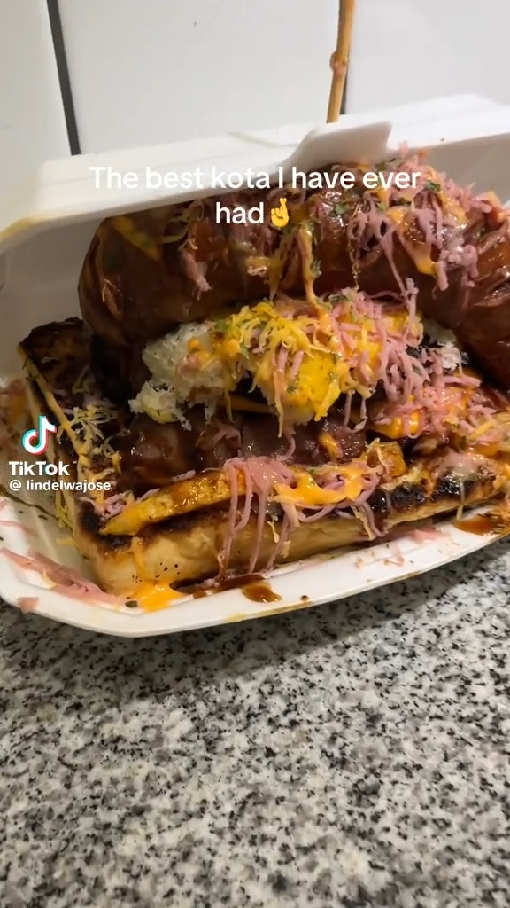
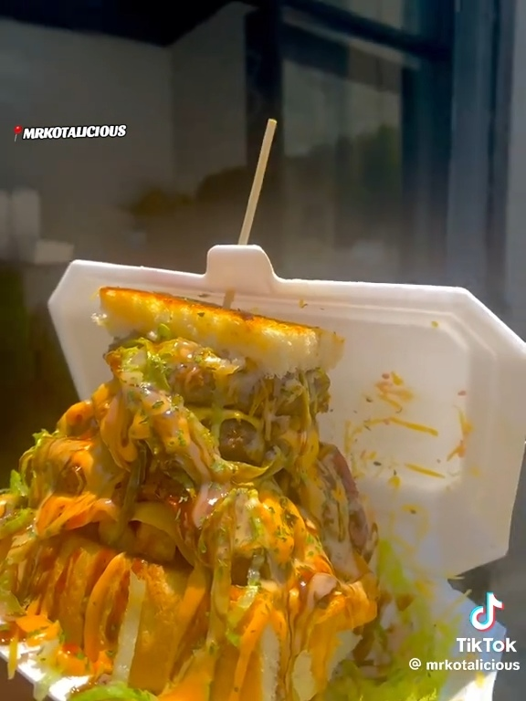

What Our Customers Say
Real reviews from real customers who love Kotalicious! Join our community of satisfied diners.
"The best kota I've ever had! Fresh ingredients, amazing flavors, and the service is top-notch. Mr Kotalicious really deserves the title of KOTA KING!"
the_real_sedzani
Wits University
"I bring my friends here every weekend. The kotas are huge, delicious, and affordable. This place is a hidden gem in Braamfontein!"
Lerato Mthembu
Regular Customer

"The cheesy kota is absolutely fire! Love the quality and the fact that everything is made fresh. Highly recommend!"
Nkosi Khumalo
Office Worker
"I was full like a lion!"
Amandla Johnson
Frequent Buyer
"Kotalicious is my go-to spot for lunch. Great taste, reasonable prices, and they remember my order. Authentic street food done right!"
Siphiwe Khumalo
Rosebank College

"The king's kota is absolutely worth it! Massive, delicious, and you get what you pay for. Best food in Braamfontein!"
Chantelle Patel
Food Enthusiast
Ready to Experience the KOTA KING?
Join thousands of satisfied customers enjoying delicious kotas at Kotalicious
Order Now